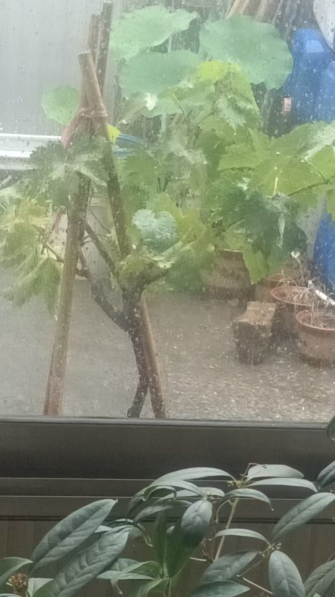
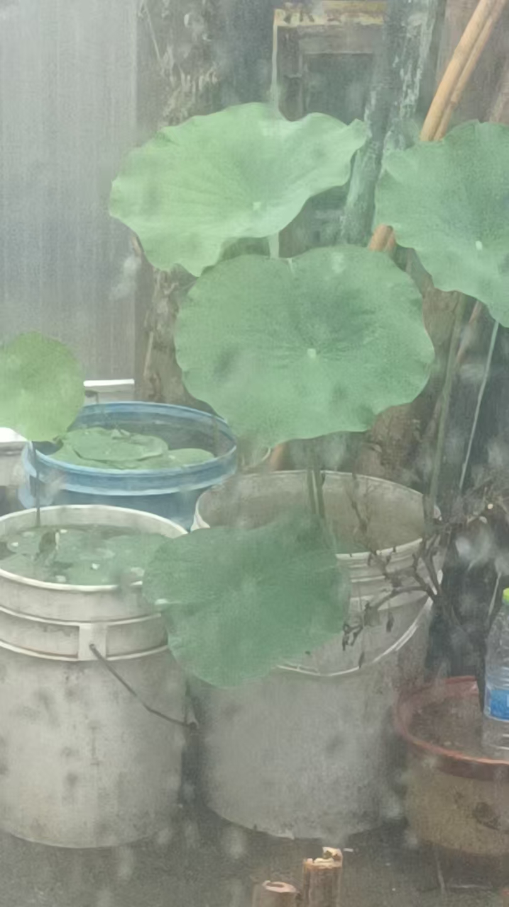
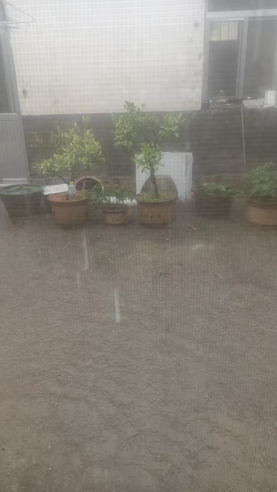
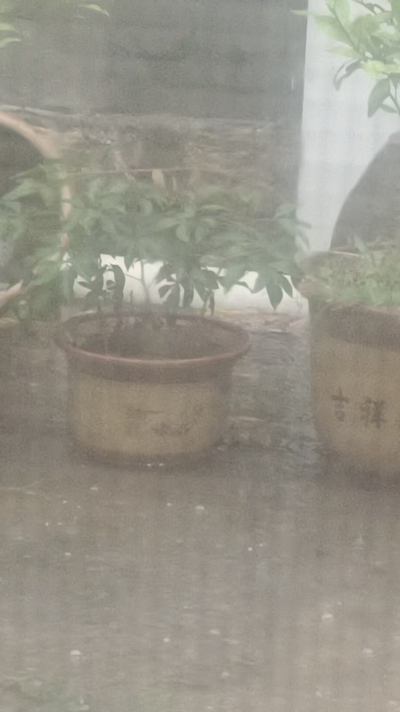
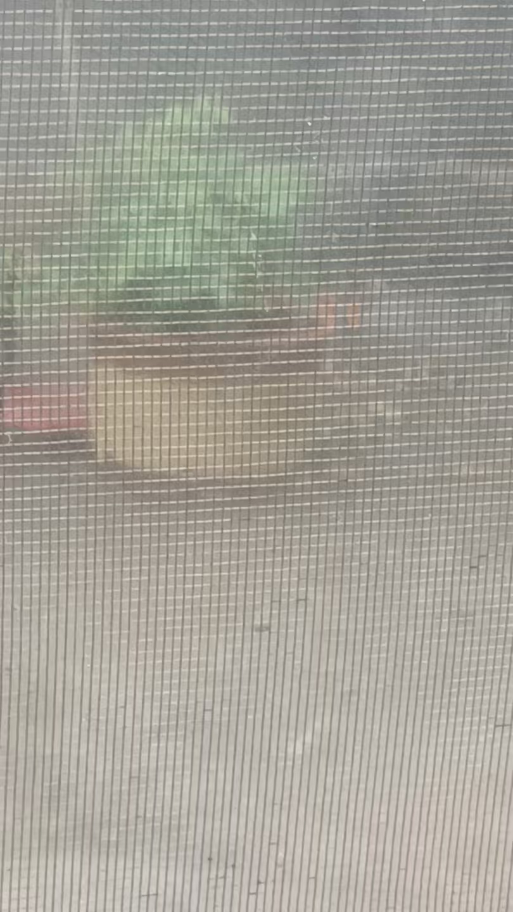
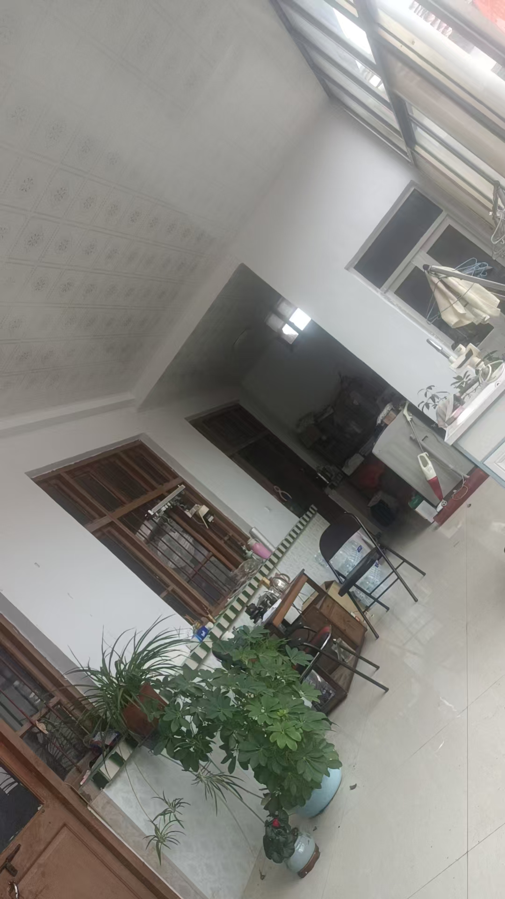
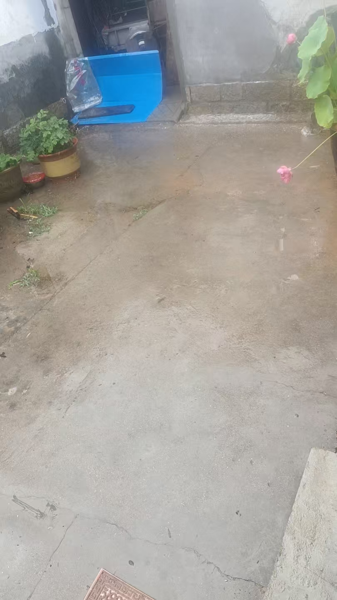

20260630荷花芙蕖开，一花一世界 一花是一个佛世界，不同的佛世界 。这也是一句咒语，会改变家里气场
符咒术法 原始对话记录俺娘煎了茄盒
我炸了个花鲢鱼
酒过两巡
雨必下足
我就说，我以成就
必润泽一方
中雨
细雨长且久，灵泽润九州
好雨
赏雨
我爹说，今年雨水第一次地下流水

越过桂花，葡萄

三个桶里是今年新栽的荷花
长势更好
只是还没有花苞

前边两个盆里是芙蕖
也还没开
我脑海里出现两个一米二的大缸
这就是说，明年换大缸
花开艳丽
也就是脑屏指令
必须买必须换
我也不敢不听

三棵芍药，明年分开

这牡丹一堆，明年也分成三盆
[憨笑][憨笑][憨笑][憨笑]金枣，桔子，佛手
我穷的时候，屋里透风，
他们年年结果

这几年，接了三米大厦子，温度高了
开花早，没有蜜蜂
受不了粉
也就不结果了
只有金枣，是第二次开花，能结果
前几天，那孩子要柠檬叶泡水喝，我买了棵柠檬，八年苗
还没到货 所以，过几天家里还会多一棵柠檬
大雨，下的不小啊
四点以后结束
地里也够了
实际这样说话是很吓人的
荷花芙蕖开，一花一世界
一花是一个佛世界，不同的佛世界
这也是一句咒语，会改变家里气场

风停雨住
荷花芙蕖开，一花一世界：庭院花草与"脑屏"联想
一、本页是什么
本页是一段生活化的家中记事，图文加短视频混在一起：一边是煎茄盒、炸花鲢、"酒过两巡"的家常，一边是雨中看花、给盆栽换盆的安排。中间夹着几句"修习"的话，比如"一花一世界"、脑屏指令。所以它既是一篇赏花记，也是一段修习随想。
二、一段有烟火气的养花日常
按原文顺序，可以读出这样一份"家中园艺清单"：
- 荷花：三个桶里是今年新栽的，长势更好，只是"还没有花苞"；
- 芙蕖：前边两个盆里，也还没开；
- 芍药：三棵，计划"明年分开"；
- 牡丹：一堆，明年也分成三盆；
- 金枣、桔子、佛手：多年前屋里透风时"年年结果"，如今搭了三米大厦子、温度高了，"开花早、没有蜜蜂、受不了粉"，反倒不太结果，只有金枣第二次开花还能结。
这段还提到买柠檬——孩子想用柠檬叶泡水，于是添了一棵八年苗。一句一件，都是过日子的细账。
三、"一花一世界"从何而来
"一花一世界，一叶一菩提"原是佛门广为流传的一句，寓意小小一花，也含容一整个世界的道理。本页把它接到自家荷花上——"一花是一个佛世界，不同的佛世界"，并进一步说这也是一句"咒语"，会改变家里的气场。
这类说法在民间修习记录里常见：把一句诗偈当作可念、可观的"语"来用。读者按民俗与文本看待即可。
四、脑屏指令：用"心里出现的画面"做决定
本页另一个有意思的点，是用"脑屏"做决定：前边两盆芙蕖没开，记录者"脑海里出现两个一米二的大缸"，于是理解为"明年换大缸、花开艳丽"，并说"必须买必须换，我也不敢不听"。
这就是站内常说的"脑屏指令"——把心里浮现的画面当作提示。它和《怎么去脑屏随时使用》《一张色卡，训练孩子，选择酒店》属同一套练习记录。
五、常见问题
问：荷花和芙蕖是一回事吗？ "芙蕖"是荷花的古称，本页把两处盆栽分开称呼，多半只是为了区分不同盆。同一物种，戏称而已。
问：搭了暖棚为什么反而不结果？ 文中给的原因是"温度高、开花早、没有蜜蜂"，传粉不足就容易不结果。这是园艺经验的说法，可作参考。
问：把一句话当"咒语"会怎样？ 本页属个人修习记录，不承诺任何现实功效，请理性看待。
六、提醒
- 本页是生活笔记，花草安排以实际气候、盆土为准；
- 文中"咒语改气场""脑屏指令"等，均按传统文化与修习记录看待，不构成任何效果承诺；
- 园艺与饮食属日常爱好，请尊重科学与常理。